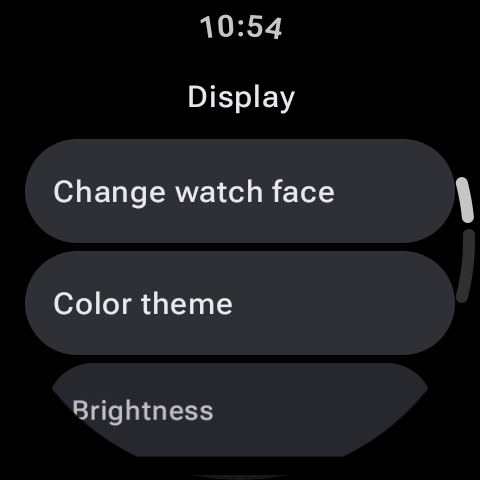

Smartwatches sollen uns in Verbindung halten, sie fungieren aber auch als hervorragende Mini-Konsolen in Zeiten, in denen keine Verbindung verfügbar ist. Ganz gleich, ob Sie in einem tiefen U-Bahn-System festsitzen, in 35.000 Fuß Höhe fliegen oder Wildnispfade ohne Mobilfunksignal erkunden, Ihre Wear OS-Smartwatch verfügt über genügend Prozessorleistung, um Sie zu unterhalten. Eigenständige Offline-Spiele sind so konzipiert, dass sie vollständig lokal auf der Uhr laufen und keine Telefonverbindung oder aktives WLAN erfordern.
In dieser Zusammenfassung untersuchen wir die zehn besten eigenständigen Offline-Spiele für die Wear OS-Plattform von Google. Diese Titel wurden so optimiert, dass sie auf die runden Bildschirme moderner Wear OS-Geräte wie der Samsung Galaxy Watch, Google Pixel Watch und TicWatch passen und eine reaktionsfähige Touch-Steuerung oder taktile Drehungen des physischen Rahmens ermöglichen.

Warum Offline-Spiele am Handgelenk spielen?
Standalone-Offline-Gaming auf einer Smartwatch bietet einzigartige Vorteile. Im Gegensatz zu Telefonspielen kann auf Uhrenspiele mit einer einfachen Drehung des Handgelenks zugegriffen werden. Sie sind für kurze, gelegentliche Gaming-Runden konzipiert, die weder den Akku Ihres Telefons belasten noch beide Hände beanspruchen. Sie bieten eine kurze mentale Pause ohne die Ablenkung durch Benachrichtigungen, die das Öffnen Ihres Telefons normalerweise mit sich bringt.
Top 10 eigenständige Wear OS-Spiele, die offline funktionieren
1. Lifeline (Interaktives Text-Rollenspiel)
Lifeline ist ein Meisterwerk minimalistischen Geschichtenerzählens. Sie spielen die Rolle eines Kommunikationsbetreibers, der ein Notsignal von Taylor empfängt, dem einzigen Überlebenden einer Bruchlandung auf einem außerirdischen Mond. Ihre Aufgabe ist es, Taylor durch gefährliche Überlebensentscheidungen zu führen. Da der Spielfortschritt durch Textauswahl und zeitgesteuerte Updates erfolgt, lässt er sich perfekt auf den kleinen Bildschirm einer Wear OS-Uhr übertragen. Das Spiel läuft nach dem Herunterladen komplett offline und bietet eine fesselnde Erzählung, die auf einem Wearable unglaublich fesselnd wirkt.
2. Combat Wear (Retro-Pixel-Art-Rollenspiel)
Wenn Sie klassische Rollenspiele lieben, ist Combat Wear ein fantastisches, vollwertiges Pixel-Art-Rollenspiel, das speziell auf Smartwatches zugeschnitten ist. Du verwaltest einen Helden, verbesserst deine Burg, kämpfst in rundenbasierten Kämpfen gegen Monster und erkundest Dungeons. Die Pixelgrafiken sind bezaubernd scharf und die gitterbasierte Bewegung funktioniert auf runden Bildschirmen überraschend gut. Es bietet Offline-Spielen, automatisches Speichern und tiefgreifende Strategieelemente, die man auf Smartwatches selten findet.
3. 2048 für Wear OS
Das legendäre Schiebeblock-Puzzlespiel 2048 passt wohl am besten zu einem Uhrenbildschirm. Mit einfachen Wischgesten (oben, unten, links, rechts) schieben Sie nummerierte Kacheln über ein Raster, um sie zusammenzuführen, und versuchen, die schwer fassbare Kachel 2048 zu erreichen. Da keine schnellen Reflexe oder komplexen UI-Steuerelemente erforderlich sind, ist es die ultimative Wahl für eine schnelle, ruhige Rätselsitzung, während Sie in der Schlange stehen.
4. Cosmo Run
Cosmo Run ist ein rasantes, zeitbasiertes Arcade-Spiel, bei dem Sie einen Energiestrahl steuern, der durch ein dynamisches, neonbeleuchtetes Gitter navigiert. Der Spieler muss in bestimmten Momenten auf den Bildschirm tippen, um 90-Grad-Kurven entlang eines sich verändernden Pfades durchzuführen. Eine falsche Bewegung und Sie fallen ins Leere. Es ist herausfordernd, wunderschön und komplett offline, was es zu einem großartigen Titel macht, um Ihre Konzentration und Reflexe zu testen.
Spitze zur Steuerung der Lünette
Suchen Sie bei Smartwatches mit physischen oder virtuellen drehbaren Lünetten, wie der Samsung Galaxy Watch-Serie, nach Spielen, die Dreheingaben unterstützen. Die Verwendung der Blende verhindert, dass Ihre Finger beim Spielen den winzigen Bildschirm blockieren!
5. Tragen Sie Maze (Labyrinth)
Erinnern Sie sich an die Holzlabyrinth-Spiele, bei denen Sie ein Brett geneigt haben, um eine Stahlkugel durch Löcher zu rollen? Wear Maze reproduziert dieses Erlebnis mithilfe des integrierten Beschleunigungsmessers oder der Touch-Drag-Steuerung Ihrer Uhr. Sie navigieren durch immer komplexere, labyrinthartige Level, um den Ausgang zu finden. Es läuft offline wie Seide und ist sehr zufriedenstellend zu lösen.
6. PetQuest (Virtueller Haustiersimulator)
Wenn Sie die Tamagotchi-Tage der 90er Jahre vermissen, ist PetQuest der perfekte virtuelle Haustierbegleiter für Ihr Handgelenk. Füttere, spiele mit und räume hinter deinem verpixelten Haustier auf. Das Spiel läuft lokal, d. h. der Lebenszyklus Ihres Haustiers und muss aktualisiert werden, auch wenn Ihr Telefon ausgeschaltet ist. Es ist ein bezauberndes, nostalgisches Offline-Spiel, das jeweils nur wenige Sekunden Interaktion erfordert.
7. Galaxy Invaders (Retro-Weltraum-Shooter)
Übernimm die Kontrolle über ein einsames Raumschiff, das die Galaxie vor Schwärmen außerirdischer Schiffe verteidigt. Galaxy Invaders bringt klassische Arcade-Shooter-Action auf Wear OS. Sie bewegen Ihren Finger über den Bildschirm oder drehen die Lünette, um Ihr Schiff hin und her zu bewegen, während das Schiff automatisch auf ankommende Wellen feuert. Das Spiel läuft lokal mit flüssigen Frameraten und Retro-Audioeffekten.
8. Snokie (Retro-Skifahren)
Snokie ist ein minimalistisches Skispiel, bei dem Sie einen Skifahrer einen verschneiten Berghang hinunterführen und dabei Bäumen, Felsen und Yeti-Monstern ausweichen. Durch Tippen auf den Bildschirm ändert sich die Richtung Ihres Skifahrers. Die Geschwindigkeit nimmt zu, je länger Sie überleben, und stellt Ihre Entscheidungsfindung im Bruchteil einer Sekunde auf die Probe. Es ist ein schneller, leichter Download, der sehr süchtig macht.
9. Tic-Tac-Toe
Manchmal ist einfach das Beste. Mit dieser sauberen Tic-Tac-Toe-Implementierung können Sie mithilfe von Passkontrollen schnelle Runden gegen eine KI oder einen Freund neben Ihnen spielen. Mit drei Schwierigkeitsgraden ist es ein großartiges mentales Offline-Mikrotraining, das absolut mühelos zu erlernen ist.
10. Tragen Sie einen Droiden
Wear Droid ist ein physikbasiertes Puzzle-Plattformspiel, bei dem Sie einen kleinen Roboter durch rotierende Zahnräder und Plattformen steuern. Sie tippen, um zu springen und Ihre Bewegungen perfekt zu timen, um Stürze oder Quetschungen zu vermeiden. Die Physik-Engine ist überraschend robust und beweist, dass Wear OS in der Lage ist, strukturierte, physikgesteuerte Plattformspiele völlig eigenständig auszuführen.
Vergleich der Spielfunktionen
| Spieltitel | Genre | Kontrolltyp | Am besten für |
|---|---|---|---|
| Lebenslinie | Rollenspiel / Erzählung | Textauswahl | Tiefgründiges Geschichtenerzählen |
| Kampfkleidung | Rollenspiel / Strategie | Rasterberührung | Langfristiger Fortschritt |
| 2048 | Puzzle | Wischen | Lässige Geistesübung |
| Galaxy Invaders | Arcade / Action | Touch / Lünette | Schnelle Reflexe |
Tipps zur Optimierung Ihrer Uhr für Offline-Gaming
Während Wear OS-Spiele auf ein geringes Gewicht ausgelegt sind, wird der Akku beim Ausführen schneller entladen als bei normaler Nutzung. Beachten Sie die folgenden Tipps, um Ihre Gaming-Sessions zu maximieren, ohne dass Sie eine Pause einlegen müssen:
- Schalten Sie den Flugmodus ein: Da diese Spiele zu 100 % offline sind, werden durch die Aktivierung des Flugmodus die Mobilfunk-, WLAN- und Bluetooth-Funkgeräte abgeschaltet, wodurch enorm viel Akkustrom gespart wird.
- Bildschirmhelligkeit anpassen: Reduzieren Sie die Bildschirmhelligkeit manuell, insbesondere beim Spielen in Innenräumen, um den Stromverbrauch des Displays auf ein Minimum zu beschränken.
- Always-on-Display deaktivieren: Stellen Sie sicher, dass sich der Bildschirm vollständig ausschaltet, wenn Sie Ihr Handgelenk senken, damit das Spiel nicht im aktiven Rendering-Modus läuft, wenn Sie nicht hinschauen.
Letzte Gedanken
Ihre Wear OS-Smartwatch ist mehr als nur ein Benachrichtigungsgerät. Mit diesen hervorragenden Offline-Standalone-Spielen ist Ihre Uhr jederzeit bereit, sich in einen Gaming-Begleiter zu verwandeln. Gehen Sie auf Ihrer Smartwatch zum Google Play Store, suchen Sie nach diesen Titeln und stellen Sie sicher, dass Sie sie vor Ihrer nächsten Fahrt zur Arbeit oder Ihrem nächsten Langstreckenflug installiert haben!